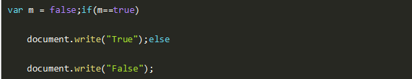
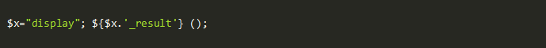

一、单选题（共30题，每题5分）
1.下列关于PHP垃圾回收的说法，错误的是？
A、开启/关闭垃圾回收机制可以通过修改php配置实现
B、可以在程序中使用gc_enable() 和 gc_disable()开启和关闭。
C、PHP中的垃圾回收机制，会大幅度提升系统性能。
D、开启垃圾回收机制后，针对内存泄露的情况，可以节省大量的内存空间，但是由于垃圾回收算法运行耗费时间，开启垃圾回收算法会增加脚本的执行时间。
参考答案：C
答案解析：PHP中的垃圾回收机制，仅仅在循环回收算法确实运行时会有时间消耗上的增加。但是在平常的(更小的)脚本中应根本就没有性能影响。
2.树结构分为？
A、二叉树和完全二叉树
B、满二叉树和二叉树
C、有序树和无序树
D、btree和搜索树
参考答案：C
答案解析：有序树和无序树。
3.数据项与数据元素关系说法错误的是？
A、数据元素是数据的基本单位
B、一个数据项可由若干个数据元素组成
C、数据项是数据的不可分割的最小单位
D、数据对象是性质相同的数据元素的集合
参考答案：B
答案解析：
数据元素：是数据的基本单位，在程序中通常作为一个整体来进行考虑和处理。一个数据元素可由若干个数据项组成。数据项是数据的不可分割的最小单位。数据项是对客观事物某一方面特性的数据描述。 数据对象：是性质相同的数据元素的集合，是数据的一个子集。如字符集合C={‘A’,’B’,’C,…}
4.在HTTP 1.1中，状态码 404 的含义是(),如果返回“找不到文件”的提示，则可用 header 函数，其语句为()
A、拒绝执行，header("Location: http://www.sijiaomao.com/404.php");
B、未授权，Header("HTTP/1.1 404 Not Found");
C、拒绝执行,Header("HTTP/1.1 404 Not Found");
D、未授权，header("Location: http://www.sijiaomao.com/404.php");
参考答案：B
答案解析：拒绝执行状态码是403 ，header("Location:XXXX")默认是做302状态的跳转，所以答案为B。
5.在mysql中用a,b,c三个字段建立一个复合索引a_b_c,请问以下哪个查询效率最差？
A、select * from test where a=10 and b>50
B、select * from test where a=10 and b>10 order by c
C、select * from test where a=10 and b=10 order by a
D、select * from test where a=10 and b = 10 order by c
参考答案：B
答案解析：最左匹配原则：该复合索引包含a,a_b,a_b_c。 复合索引只有在前面的字段为精确查询时，才会用上后面的复合索引，一旦出现不精确查询，则不会使用复合索引。 A选项中，使用a_b索引。 B选项中，使用了a_b索引，且有order by c故效率最差。 C选项中，使用a_b索引。 D选项中，使用a_b_c索引。
6.一条sql语句从执行到返回结果中间花费时间最长的环节是哪步
A、从php到mysql的网络层
B、mysql解析语句 ,优化,生成执行计划
C、执行
D、返回结果
参考答案：D
答案解析：查询结果的数据量越大返回时间越长，远远超过其他环节的占用时间。
7.关于设计模式遵循的原则，说法错误的是？
A、组合优于继承
B、针对实现编程
C、对扩展开放，对修改关闭
D、降低对象之间的耦合
8.一个网站用过lvs+keepalived做了集群，负载均衡算法是RR，但是网站后台登陆的时候，一直提示登录超时，无法使用，请问如何解决这个问题？
A、将网站后台请求不做负载均衡
B、修改负载均衡算法为wlc
C、设置LVS参数，添加persistence_timeout参数
D、修改负载均衡算法为ip hash</p><p><br/>
9.CSRF攻击描述错误的是？
A、CSRF需要有JavaScript代码
B、CSRF攻击恶意代码位于第三方站点上
C、过滤用户的输入可以防止恶意代码注入到某个站点，但是它无阻止法恶意代码在第三方站点上运行
D、CSRF符合同源策略
10.关于PHP模式修饰符说法错误的是？
A、i 大小写不敏感匹配
B、m ^将只匹配字符串的开头
C、x 空白和#注释将被忽略
D、将替换后的字符串作为php代码评估执行
参考答案：B
答案解析：m为增强的行锚点模式，\\n的前后也会被认为结束和开始
很多人在刚接触这个行业的时候或者是在遇到瓶颈期的时候，总会遇到一些问题，比如学了一段时间感觉没有方向感，不知道该从那里入手去学习，对此我整理了一些资料，需要的可以免费分享给大家（11年架构师带你解读年薪50万面试通关秘籍。）
如果喜欢我的文章，想与一群资深开发者一起交流学习的话，获取更多相关大厂面试咨询和指导，欢迎加入我的学习交流群点击此处PHP高级交流
11 6.3个不同元素依次进栈，有（）不同的出栈序列
A、A、4
B、B、5
C、C、6
D、D、7
12.多个线程可同时操作一个数据，为了保证该数据的准确性，可将操作该数据的部分改为（）
A、只写
B、只读
C、异步
D、同步
13.HTTP协议如何工作？
A、解析域名->通过dns拿到IP->建立TCP连接->向服务器拿到请求->返回信息
B、通过dns拿到IP->建立TCP连接->向服务器拿到请求->返回信息
C、解析域名->通过dns拿到IP->向服务器拿到请求->建立TCP连接->返回信息
D、解析域名->向服务器拿到请求->通过dns拿到IP->建立TCP连接->返回信息
14.以下关于HTTP method 的说法，错误的是？
A、一台服务器要与HTTP1.1兼容，只要为资源实现GET和HEAD方法即可
B、PUT让服务器用请求的主体部分来创建一个由所请求的URL命名的新文档，或者，如果那个URL已经存在的话，就用干这个主体替代它
C、POST起初是用来向服务器输入数据的。实际上，通常会用它来支持HTML的表单。表单中填好的数据通常会被送给服务器，然后由服务器将其发送到要去的地方。
D、TRACE方法请求web服务器告知其支持的各种功能。可以查询服务器支持哪些方法或者对某些特殊资源支持哪些方法
15.以下JavaScript代码的运行结果是（）

A、true
B、False
C、false
D、True
16.关于header请求头，说法错误的是
A、Upgrade: HTTP/2.0 切换协议版本
B、Rang bytes=0-2000 请求一段内容，如0到2000字节，可用于断点下载
C、Vary 使用缓存的版本，一般用于代理服务器
D、X-Requested-With 异步请求
17.关于PHP数组的大小正确的是
A、hash Bucket的大小，最小为8，以2x增长。
B、初始数组不给元素分配空间
C、数组会谁元素的变动随时变化
D、扩容之后需要表不用做任何操作
18.在MySQL中，可用于创建一个新数据库的SQL语句为（）
A、CREATE DATABASE
B、CREATE TABLE
C、CREATE DATABASES
D、CREATE DB
19.大量在外部排序中使用的数据结构是()
A、hashtable
B、B+Tree
C、RB-tree
D、skip list
20.以下关于PHP字符串说法错误的是？
A、PHP字符串二进制安全的
B、PHP字符串最大为2G
C、PHP字符串可以被序列化
D、PHP字符串可以使用\0来结束
21.下列数据结构中，能用二分法进行查找的是（ ）。
A、 顺序存储的有序线性表
B、 线性链表
C、 二叉链表
D、 有序线性链表
22.is_numberic()函数的含义？
A、判断传入值是不是数值
B、将传入值转换为整数
C、将传入值转换为数值
D、判断传入值是不是小数
23.哪项不是yii入口脚本主要工作？
A、定义全局常量
B、包含 [[Yii]] 类文件
C、加载应用配置
D、加载过滤器
24.以下代码将会调用display_result() ?

A、错误
B、正确
C、编译错误
D、无答案
25.PHP的三个模块不包括哪个？
A、内核
B、zend引擎
C、扩展层
D、解析层
26.下面关于opcode的说法错误的是?
A、opcode 是Php的扩展模块
B、用apc 或者xcache 缓存可以缓存php的opcode
C、opcode 是php脚本语言编译后的中间语言。
D、缓存opcode 后 可以加快网站的运行速度
27.关于php运行机制错误的是：
A、php总共有三个模块：内核、Zend引擎、扩展层
B、PHP通过SAPI和Apache相连
C、Zend引擎可以将源文件转换成二进制文件运行
D、操作mysql的功能没有包含在php内核中
参考答案：C
28.黑客利用缓冲区溢出漏洞进行攻击时，对于这一威胁，最可靠的解决方案是（ ）
A、安装防火墙
B、安装用户身份认证系统
C、安装系统打补丁
D、安装防病毒软件
29.随着业务的增长，信息系统的访问量和数据流量快速增加，采用负载均衡（Load Balance）方法可避免由此导致的系统性能下降甚至崩溃。以下关于负载均衡的叙述中，错误的是（）。
A、负载均衡通常由服务器端安装的附加软件来实现
B、负载均衡并不会增加系统的吞吐量
C、负载均衡可在不同地理位置、不同网络结构的服务器群之间进行
D、负载均衡可使用户只通过一个IP地址或域名就能访问相应的服务器
30.SMJ二进制字节顺序正确的是？
A、0101 0011 0100 1010 0100 1101
B、0011 0101 0100 1101 0100 1010
C、0101 0011 0100 0100 1010 1101
D、0011 0100 0100 1010 0011 1101